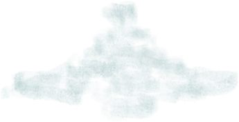

I'm SaGa! (Saumya Garg)
A UX designer and Artist building experiences that are functional and visually compelling.


Illustration: a young pirate on a wooden ship, looking through a spyglass as the ship sails over painted waves.



The voyage so far
Every port that shaped how I design.


The voyage so far
Every port that shaped how I design.